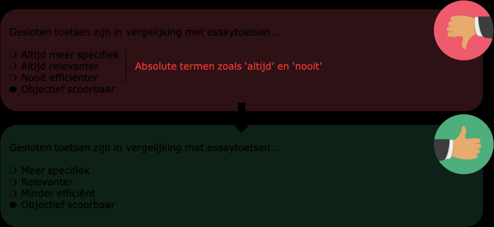
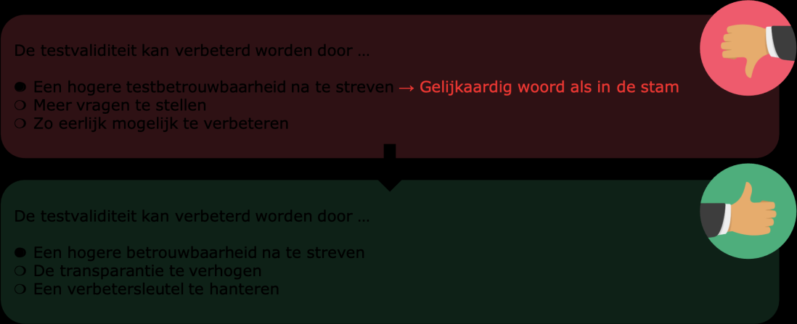
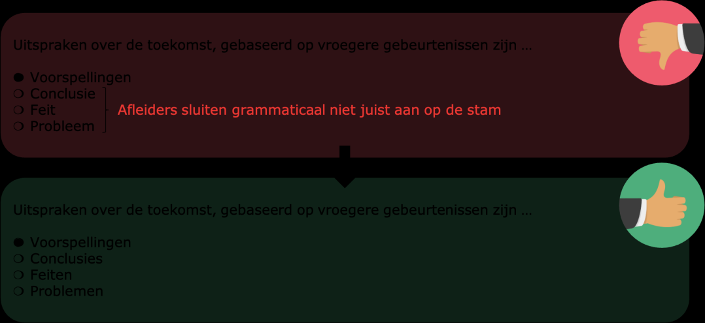
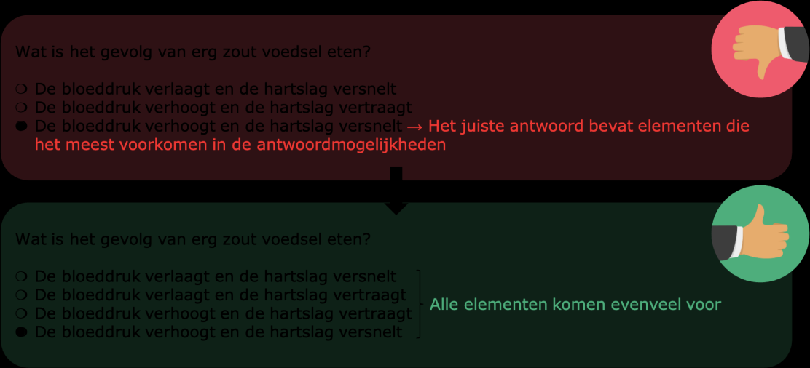
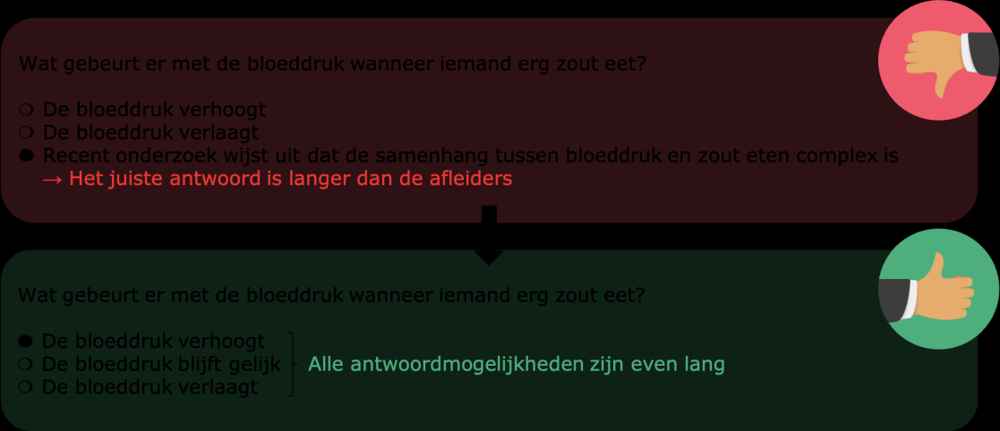

Wees alert voor test-wiseness
Let op voor test-wiseness strategieën, waarbij leerlingen het juiste antwoord kunnen achterhalen op basis van de formulering van de vraag, zonder de vraag inhoudelijk te moeten beantwoorden.
- Wees voorzichtig met absolute termen (bv. 'altijd', 'nooit', 'volledig', 'zeker', 'helemaal') aangezien deze een antwoordmogelijkheid ongeloofwaardiger maken.
- Vermijd identieke of gelijkaardige woorden in de antwoordmogelijkheden als in de stam.
- Vermijd dat één of meerdere antwoordmogelijkheden grammaticaal niet aansluiten op de stam.
- Vermijd 'convergence' strategieën (= het juiste antwoord bevat vaak elementen die het meest voorkomen in alle antwoordmogelijkheden).




- Het juiste antwoord mag niet systematisch langer zijn dan de andere afleiders.
- Vermijd een systematiek m.b.t. de positie van het juiste antwoord.
- Vermijd een systematiek m.b.t. het gebruik van AIA als juiste antwoordmogelijkheid. Indien je AIA toevoegt, laat de AIA dan bij een representatief aantal vragen als juiste antwoord gelden.
- Vermijd een verschillende formulering, woordenschat of moeilijkheid in het juiste antwoord t.o.v. de afleiders.
- Wees voorzichtig met de AIA 'Alle', want wanneer leerlingen één afleider kunnen elimineren, kunnen ze dit alternatief ook elimineren. Dit zorgt ervoor dat leerlingen gemakkelijker het juiste antwoord kunnen raden.
